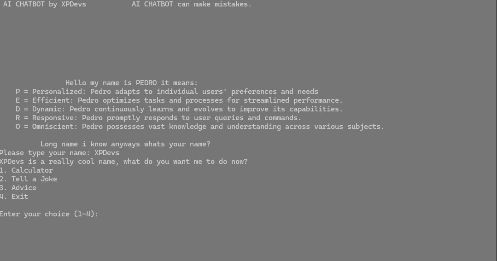

Where we specialize in the development and distribution of cutting-edge operating systems. Our passion lies in crafting software solutions that power devices, streamline workflows, and enrich user experiences across a wide array of platforms.
At XPDevs, we pride ourselves on our innovative approach to operating system design, leveraging the latest technologies and methodologies to create robust, reliable, and user-friendly software. With a dedicated team of developers, engineers, and designers, we work tirelessly to push the boundaries of what's possible in the world of computing.
Our commitment to excellence extends beyond just creating exceptional software. We are also dedicated to providing top-notch support and resources to our users, ensuring that they have everything they need to succeed in their endeavors. Whether you're a seasoned professional or just starting out, we're here to help you navigate the ever-evolving landscape of technology.
Join us on our journey as we continue to innovate, inspire, and transform the way the world interacts with technology. Together, we can shape the future of computing and empower individuals and businesses alike to achieve their full potential.
Thank you for choosing XPDevs. Let's build something amazing together.
Be the first to see what's coming next in our latest version of Doors.

We can be contacted through our customer support email: xpdevscstmspport@gmail.com
Dear Doors v3.0 Users,
We would like to extend our heartfelt thanks for your continued support and trust in XPDevs. As we continue to innovate and evolve our product offerings, we have made the strategic decision to retire Doors v3.0.
Retirement Date: October 9, 2024
Why is Doors v3.0 being retired? The decision to retire Doors v3.0 allows us to focus our resources on developing new and advanced solutions that better meet the evolving needs of our users. This shift will enable us to deliver more sophisticated features, enhanced security, and an improved user experience in our upcoming versions and new products.
What does this mean for you?
Continued Support Until Retirement: We will continue to provide support, updates, and security patches for Doors v3.0 until the retirement date. Migration Assistance: To ensure a smooth transition, we will provide resources and assistance to help you migrate to our latest products or other suitable alternatives. Data Preservation: Please ensure you back up your data and plan your migration well before the retirement date to avoid any disruption.
Next Steps:
Review the Migration Guide: Visit our Migration Guide for detailed instructions and recommendations for transitioning from Doors v3.0. Explore New Products: Discover the features and benefits of our latest offerings that can better meet your needs. Contact Support: If you have any questions or need personalized assistance, please reach out to our support team at xpdevscstmspport@gmail.com. We understand that change can be challenging, and we are here to support you every step of the way. Thank you for being a valued part of the XPDevs community. We are excited about the future and look forward to continuing to serve you with our innovative solutions.
Best Regards, The XPDevs Team